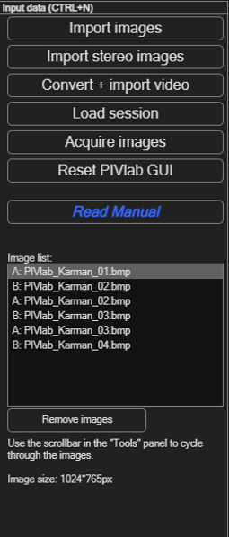
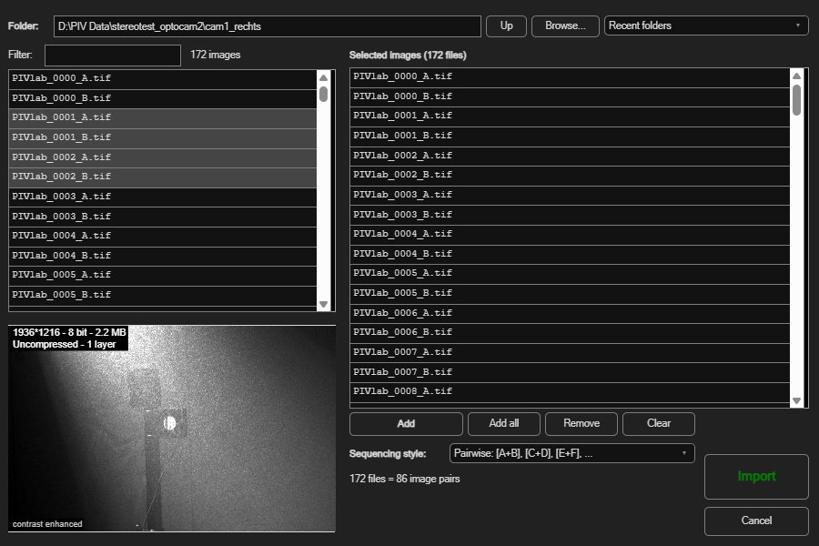

Sessions: images, settings and saved work
Before anything else in PIVlab, you need images loaded. This page covers importing an image sequence, and — because it trips people up — the difference between a session (everything: images, masks, results) and settings (just your configuration, reusable on a different dataset).
Starting a new session
Choose File → New session (Ctrl+N), or click the first icon in Main tasks quick access. This opens the Input data panel shown here, with these ways to get images in: Import images (from disk), Import stereo images (two cameras, see Stereo-PIV), Convert + import video, Load session (resume earlier work — see below), and Acquire images (capture directly from a connected camera).
Reset PIVlab GUI removes all images, results, masks and calibrations and sets all settings to their defaults, also those of the image acquisition panel. Your preferences (folders, theme, panel width, Basic/Advanced mode) are kept. PIVlab asks before it resets; unsaved work is lost.

Importing images
Click Import images to open the image-import dialog shown below. Browse to your folder, add the files you want to the list on the right, and choose an image sequencing style — this tells PIVlab how to pair up your files into frames:

| Style | Pairing | Use it for |
|---|---|---|
| Time resolved | [A+B], [B+C], [C+D], … |
A continuous recording where every image is reused as both the second half of one pair and the first half of the next — gives one vector field per consecutive frame step. |
| Pairwise | [A+B], [C+D], [E+F], … |
Discrete double-frame/double-exposure pairs, each captured with its own short time separation, with no overlap between pairs. |
| Reference | [A+B], [A+C], [A+D], … |
Comparing every image against one fixed reference frame — e.g. measuring growing displacement relative to a baseline. |
- Go to your folder: type it, use Up /
Browse..., pick one of the Recent folders,
or double-click a sub-folder. The Filter shows only names that
contain a text (e.g.
_A); with*(any characters) and?(one character) the whole name must match, e.g.cam1*_A. - Select files (click and drag, Shift or Ctrl, Ctrl+A for all) and click Add, or Add all. The files are imported in the order in which you add them; the same files may be added more than once. Remove and Clear edit the list.
- Check the Sequencing style; the line below it shows how many image pairs you get.
- Click Import to load them (or Cancel to back out). At least two images — one pair — are required.
The image list and moving between frames
Loaded frames appear in the Image list, each entry prefixed A: or B: for the first/second image of the pair. To move through frames, use the slider in the Tools panel at the top of the screen (tooltip: “Step through your frames here”), and Toggle to flip between the A and B image of the current frame.
Select one or more entries in the image list and click Remove images to drop them again. At least one pair must remain.
Sessions vs. settings — what's the difference?
PIVlab has two, easily confused, kinds of saved file. Knowing which one you want avoids a lot of head-scratching:
| Session | Settings | |
|---|---|---|
| Menu path | File → Load/Save → …PIVlab session | File → Load/Save → …PIVlab settings |
| Contains | Everything: image references, masks, ROI, calibration, analysis results, and all settings. | Only the configuration — all settings of all panels and the calibration (reference distance, time step, axis directions). No images and no results. |
| Use it to | Pause and resume the exact same project, or hand off a finished analysis to someone else. | Reuse a processing pipeline you've tuned on a different dataset, or share a configuration without sending any data. |
| Default file name | PIVlab_session.mat |
PIVlab_set_<username>.mat |
Saving and loading a session
- Save: File → Save → Save PIVlab session (or the
Load session button's counterpart in the menu). Choose a location;
the default name is
PIVlab_session.mat. - Load: click Load session in the Input data panel, or File → Load → Load PIVlab session. This restores images, masks, results and settings exactly as they were.
A session brings PIVlab back to where you saved it: the same images, results, masks, calibration and settings, and the same view (open panel, displayed frame, zoom). Camera connections are not restored.
Saving and loading settings only
- Save: File → Save → Save current PIVlab settings. Choose a
location; the default name includes your username, e.g.
PIVlab_set_yourname.mat. - Load: File → Load → Import PIVlab settings. This applies the pre-processing, PIV, data smoothing and vector validation settings, the calibration and the mask generator settings. Display, export and image acquisition settings stay as they are, and so do camera calibration, image rectification and Stereo-PIV mode (they belong to the data of a session). Your loaded images and results are not touched.
- A settings file can also be a session: Import PIVlab settings takes the settings out of a session file without loading its images or results.